Measuring Metrically with Maggie
An Introduction to Metric Units
Wow, I just flew in from planet Micron. It was a long flight, but well worth it to get to spend time with you!
My name is Maggie in your language (but you couldn't pronounce my real name!)
When I first arrived I couldn't understand how you measure things, but my friend Tom taught me all about measurement, and I am going to share with you everything he taught me.
The first thing Tom told me was that you can measure things using two different systems: Metric and US Standard.
Today is my day to learn Metric !
Tom says that if I understand 10, 100, and 1000 then I will have a very easy time learning the metric system. I wish I had ten fingers!
Liquids
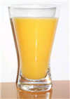
Since it was such a long flight, the first thing I could use is something cold to drink.
But I want to know how much to ask for! So I can get a drink that is not too big or too small.
Tom says I only need to know about:
- Milliliters
- Liters
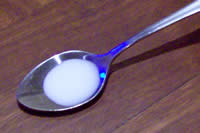
A milliliter (that is "milli" and "liter" put together) is a very small amount of liquid.
Here is a milliliter of milk in a teaspoon.
It doesn't even fill the teaspoon!
Tom says if you collect about 20 drops of water, you will have 1 milliliter:
| 20 drops of water | 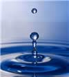 | make about 1 milliliter |
And that a teaspoon can hold about five milliliters:
| 1 full teaspoon of liquid | 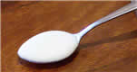 | is about 5 milliliters |
Milliliters are often written as ml (for short), so "100 ml" means "100 milliliters".
But a milliliter is definitely not enough for someone who is thirsty! So Tom told me about liters.
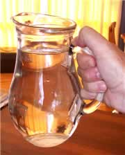
A liter is just a bunch of milliliters put all together. In fact, 1000 milliliters makes up 1 liter.
1 liter = 1,000 milliliters
This jug has exactly 1 liter of water in it.
Liters are often written as L (for short), so "3 L" means "3 Liters".
Milk, soda and other drinks are often sold in liters.
Tom says to look on the labels, so the next time you are at the store take a minute and check out how many liters (or milliliters) are in each container!
Now I know that a milliliter is very small, and a liter is like a jug in size, I think I will ask for half a liter of juice!
So this is all you need to know:
1 Liter = 1,000 Milliliters
Mass (Weight)
Next I wanted to eat some chocolate ... so I should learn about mass. You often call it "weight", but it is only because of the gravity on your planet that items have weight!
Tom tells me that to understand mass, I should know these three terms:
- Grams
- Kilograms
- Tonnes
Grams are the smallest, Tonnes are the biggest.
Let’s take a few minutes and explore how heavy each of these are.
Grams
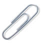
A paperclip weighs about 1 gram.
Hold one small paperclip in your hand. Does that weigh a lot? No! A gram is very light. That is why you often see things measured in hundreds of grams.
Grams are often written as g (for short), so "300 g" means "300 grams".
| Tom tells me a loaf of bread weighs about 700 g | 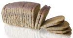 |
Kilograms
Once you have 1,000 grams, you have 1 kilogram.1 kilogram = 1,000 grams A dictionary has a mass of about one kilogram. |
 |
Kilograms are great for measuring things that can be lifted by people (sometimes very strong people are needed of course!).
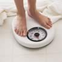
Kilograms are often written as kg (that is a "k" for "kilo" and a "g" for "gram"), so "10 kg" means "10 kilograms".
Scales measure our weight using kilograms. Tom weighs about 40 kg. How much do you weigh?
But when it comes to things that are very heavy, we need to use the tonne.
Tonne
Once you have 1000 kilograms, you will have 1 tonne.
1 tonne = 1,000 kilograms
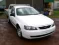
Tonnes (also called Metric Tons) are used to measure things that are very heavy.
Things like cars, trucks and large cargo boxes are weighed using the tonne.
This car has a mass of about 2 tonnes.
Tonnes are often written as t (for short), so "5 t" means "5 tonnes".
Final thoughts about mass:
1 kilogram = 1,000 grams
1 tonne = 1,000 kilograms
Length

Measuring how long things are, how tall they are, or how far apart they might be are all examples of length measurements.
Tom says I should know about:
- Millimeters
- Centimeters
- Meters
- Kilometers
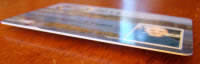
Small units of length are called millimeters.
A millimeter is about the thickness of a plastic id card (or credit card).
Or about the thickness of 10 sheets of paper on top of each other.
This is a very small measurement!
Centimeters

When you have something that is 10 millimeters, it can be said that it is 1 centimeter.
1 centimeter = 10 millimeters
A fingernail is about one centimeter wide.
We can use millimeters or centimeters to measure how tall we are, or how wide a table is, but to measure the length of football field it is better to use meters.
Meters

A meter is equal to 100 centimeters.
1 meter = 100 centimeters
The length of this guitar is about 1 meter
Meters might be used to measure the length of a house, or the size of a playground.
Kilometers
When you need to get from one place to another, you will need to measure that distance using kilometers. A kilometer is equal to 1,000 meters.
The distance from one city to another or how far a plane travels are measured using kilometers.
Final thoughts about measuring length:
1 centimeter = 10 millimeters
1 meter = 100 centimeters
1 kilometer = 1000 meters
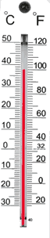
Temperature
I was feeling a bit hot, so I asked Tom how to measure temperature.
So he showed me a thermometer. But I saw 2 sets of numbers!
Tom explained that a thermometer measures in degrees (°) of either Celsius or Fahrenheit.
"Why two scales?", I asked.
Tom said that some people like one scale and some like the other, and that I should learn both!
He then gave me an example: when water freezes the thermometer shows:
- 0 degrees Celsius on the left side,
- but on the right side it shows 32 degrees Fahrenheit.
So there can be two numbers for the same thing!
He gave me more examples.
- A hot sunny day might have a temperature of 30 degrees Celsius, which is 86 degrees in Fahrenheit.
- Water boils at 100 degrees Celsius or 212 degrees Fahrenheit.
- And you can bake cookies in your oven at a temperature of 180 degrees Celsius, which is 356 degrees Fahrenheit.
I decided to get my own thermometer, so I would learn about all this.
I hope you enjoyed learning all about metric measurement. Now I must return home. Keep measuring until I see you again!!!!!!!!! |